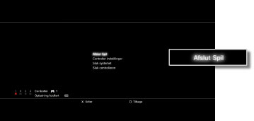

Spil > Afspilning af PlayStation®2-/PlayStation®-formateret software > Start / afslutning af spil
Start / afslutning af spil
Start af et spil
Spillet starter automatisk, når du indsætter en disk.
Afslutning af et spil
Tryk på PS-tasten på den trådløse controller undervejs i et spil, og vælg derefter [Afslut Spil].

Vigtigt
Når du starter eller afslutter PlayStation®2 formateret software, fjernes tilknytninger af controller-numre. Følg nedenstående trin for at tilknytte controller-numre.
Ved start af et spil: Tryk på PS-tasten på controlleren, når der vises et spil på skærmen.
Ved afslutning af et spil: Tryk på PS-tasten på controlleren, når XMB™ vises.
Tip
Du skal oprette et Internt Memory Card, hvis du vil gemme data fra PlayStation®2/PlayStation® formateret software. Yderligere oplysninger om interne Memory Cards findes under  (Spil) > [Afspilning af PlayStation®2-/PlayStation®-formateret software] > [Brug af gemte data] i denne vejledning.
(Spil) > [Afspilning af PlayStation®2-/PlayStation®-formateret software] > [Brug af gemte data] i denne vejledning.
Nulstilling af spil
Tryk på PS-tasten på den trådløse controller undervejs i et spil, og vælg derefter [Genopsæt spil] på den viste skærm. Du kan kun nulstille et spil, når der afspilles titler i PlayStation®2 eller PlayStation® formateret software.
Vigtigt
- Nogle titler i din PlayStation®2- eller PlayStation® formateret software afspilles anderledes på et PS3-system end på et PlayStation®2- eller PlayStation®-system, eller måske afspilles de ikke korrekt på PS3™-systemet.
- Ikke alle PS3™-systemer understøtter afspilning af PlayStation®2-formaterede diske. Yderligere oplysninger findes under [Understøttede disktyper], på SIE-webstedet for dit land/område eller i den dokumentation, der fulgte med dit PS3™-system.